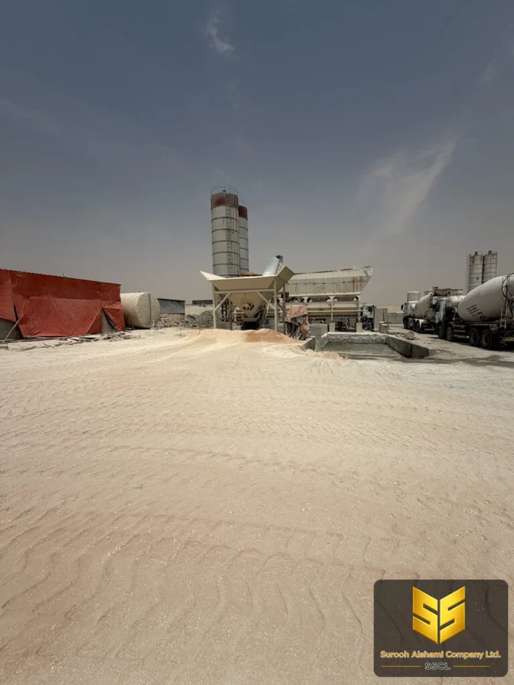

مواصفات
الفرق بين R1 و R2 و R3: تصنيف التعرض ومتطلبات الخرسانة
المشروع السكني الواحد في الرياض يحتاج غالباً ثلاث خلطات مختلفة في اليوم نفسه. هذا ليس تناقضاً، بل نتيجة مباشرة لتصنيف التعرض.
يسأل كثير من أصحاب المشاريع عن سبب اختلاف مقاومة الخرسانة من عنصر لآخر في المبنى نفسه: الأساسات أقوى من السواتر، والسقف يحتاج درجة مختلفة عن الأرضية. الجواب أن مقاومة الخرسانة ليست رقماً مختاراً، بل نتيجة مباشرة لمقدار ما تتعرض له من رطوبة وثبات وعوامل جو.
تصف مواصفات الخرسانة هذا المقدار بتصنيف التعرض، وتكتبه على هيئة حرف يليه رقم، من R1 وهو الأدنى إلى R4 وهو الأعلى. كلما ارتفع الرقم زاد التعرض، وارتفعت معه متطلبات الخرسانة.
ما هو تصنيف التعرض؟
تصنيف التعرض يصف مقدار تأثير العوامل الخارجية على الخرسانة خلال عمرها التشغيلي: الرطوبة، والماء، والملوحات، والحرارة، والتجمد. وهو ليس وصفاً عاماً للمشروع كله، بل وصفة لكل عنصر على حدة.
التطبيق العملي واضح: إذا كانت القاعدة في الأساس تلامس تربة رطبة طوال عمرها، فهي في تصنيف أعلى من الجدار الداخلي الذي لا يرى رطوبة ولا مطراً. وهذا يعني أن المشروع الواحد قد يحتاج أكثر من خلطة، وقد تصل هذه الخلطات في شاحنتين مختلفتين.
التصنيفات الأربعة
الفرق بين التصنيفات ليس في المظهر، بل في ثلاثة أمور حسّاسة: مقاومة الخرسانة المطلوبة، وأقصى نسبة ماء إلى أسمنت مسموحة، ومتطلبات نوع الأسمنت ونعومة السطح. وكلما ارتفع التصنيف ارتفعت هذه الثلاثة معاً.
ولهذا السبب لا يصح أن يُطلب في المخطط أشد مما يلزم فقط، ولا أقل مما يلزم. الطلب الزائد يعني خلطة أغلى وأطول زمناً في الانتظار، والطلب الناقص يعني خرسانة ستظهر فيها التشققات قبل انتهاء الضمان.
نسبة الماء إلى الأسمنت
نسبة الماء إلى الأسمنت هي الرقم الذي يحدد الخرسانة أكثر مما تحدده مقاومة الأسمنت نفسها. والمقصود هنا الماء الإضافي الذي يضاف على ما يستهلكه الأسمنت في التفاعل الكيميائي، لا الماء كله.
كلما ارتفعت النسبة، ازداد عدد المسام داخل الخرسانة بعد التصلب، فتنخفض المقاومة وتزداد النفاذية وتتسرّب المياه عبر السطح. القاعدة عامة: كل زيادة في النسبة تكلّف مقاومة، وكل زيادة في النفاذية تكلّف عمراً افتراضياً.
ولهذا ترتبط النسبة بتصنيف التعرض ارتباطاً مباشراً، فالتصنيف الأعلى يعني نسبة ماء أقل وخلطة أنظف. وفي المقابل، استخدام نسبة ماء أعلى لتوفير تكلفة الأسمنت ليس توفيراً، بل تكلفة مؤجلة تظهر بعد سنوات.
| التصنيف | الوصف المختصر | أقصى نسبة ماء |
|---|---|---|
| R1 | داخل مبنى محمي | 0.60 |
| R2 | رطوبة نادرة أو عرضية | 0.55 |
| R3 | رطوبة معتدلة إلى شاملة | 0.50 |
| R4 | تعرّض شديد ومستمر | 0.45 |
الأرقام في الجدول هي الحدود القصوى المسموحة، وليست هدفاً يُسعى إليه. الخلطة الجيدة في تصنيف عالٍ تكون عند الحد أو تحته، لأنها تحتاج أن تحتفظ بقدر من الماء الحر لمقاومة الحرارة.
متطلبات كل عنصر في المبنى
هذا هو الجدول الذي يحوّل التصنيف من مفهوم نظري إلى قرار عملي. لكل عنصر في المبنى تصنيف يحدده موقعه ووظيفته، ومنه تُشتق درجة المقاومة المطلوبة ونسبة الماء المسموحة.| العنصر | التصنيف | السبب |
|---|---|---|
| جدران داخلية | R1 | لا تلامس رطوبة أو ماء |
| أرضيات معمارية | R2 | تنظيف بماء أحياناً |
| سواتر وأعمدة خارجية | R3 | تعرّض للمطر وبرودة الليل |
| أساسات مدفونة | R3 | تربة رطبة تماس الخرسانة دائماً |
| خزان أرضي | R4 | ماء دائم من جهة واحدة |
| مدرّج خارجي | R4 | ماء وملوحات ورياح حارة |
أثر حرارة الرياض على الخلطة
في صيف الرياض قد تتجاوز حرارة الخرسانة الطازجة ثلاثين درجة، وهذا ليس رقماً تجميلياً. عند تجاوزه يتباطأ التفاعل الكيميائي، وتتسارع عملية الجفاف من السطح، فيصل الماء إلى عمق الخرسانة قبل أن يتصلّب ما تحته.
النتيجة بنية مسامية في الطبقات العليا، وضعف في السطح بعد أيام من الصب. هنا تحديداً تظهر أهمية التصنيف: الخلطة في تصنيف عالٍ تحتاج ماء حر أكثر للحفاظ على رطوبتها الداخلية، ولهذا تحديداً لا تنزل تحت الحد المسموح في نسبة الماء.
والحل العملي ليس زيادة الماء، لأن الماء الزائد يخفض المقاومة. الحل هو العمل على سرعة الصب نفسها: صب متواصل دون انقطاع، وتقليل المسافة التي تعبرها الخرسانة، واستخدام مضافات إن لم تكن موانع الصب مطلوبة.

كيف تقرأ المواصفات دون التباس
المواصفات تكتب المتطلبات بصيغة نمطية: درجة الأسمنت، والحد الأدنى للمقاومة، وأقصى نسبة ماء، ونوع الصبّ، وسماكة العنصر. لهذه القيم حدود دنيا وحدود علا، ويجب احترام الاتجاهين معاً.
الخطأ الشائع في الموقع هو أبعد من ذلك: الخلطة تصبّ وتقبل، ولا أحد يسأل عن القيم الفعلية. لذلك اطلب من المورد قبل التحميل أن يحدد لك القيم الأربع كتابةً: درجة الأسمنت، والمقاومة الدنيا، والحد الأقصى لنسبة الماء، وما إذا كانت الخلطة مصممة لظروف الحرارة العالية.
واسأل عن عيّنة صغيرة قبل الطلبية الكبيرة. العيّنة تُؤخذ في الموقع وتُختبر، وتُظهر لك النتيجة في اليوم نفسه أو في اليوم التالي. هذه الخطوة وحدها تمنع أكثر مشاكل المواد شيوعاً في الموقع.
أخطاء شائعة في التعامل مع التصنيف
- فرض درجة واحدة على كل المشروع. من
- اعتبار التصنيف بديلاً عن التصميم. هو يحدّد الحد الأدنى، ولا يصحح أخطاء التسليح أو الأبعاد.
- تجاهل التصنيف في حالة التصميم. في
- خلط عدة تصنيفات في شاحنة واحدة. يغيّر السلوك ولا يمكن حجز عيّنة واضحة منها لاحقاً.
أهم ما في هذه المقالة
- تصنيف التعرّض يصف بيئته لا عمره.
- الرقم في التصنيف يحدد المقاومة الدنيا وأقصى نسبة ماء.
- الخلطة الجيدة في تصنيف عالٍ تكون عند الحد أو تحته.
- حارة الرياض تجعل الصب المتصل أهم من زيادة الماء.
- اطلب القيم الأربع كتابةً قبل تحميل الشاحنة.
ما سبق هو القاعدة العامة. أما التطبيق داخل موقعك فيبدأ بمراجعة المخطط: لكل عنصر في المخطط التصنيف الخاص به، وقائمة العناصر مع تصنيفاتها يجب أن تصلك قبل طلب الخرسانة لا بعد تحميلها.
عندك موقع في الرياض وتحتاج عرض سعر؟
أرسل لنا تفاصيل المشروع، ونعود إليك بعرض سعر مبدئي.